Simplified model for altitude control of a drone
The following report aims to give a better understanding of the steps taken to linearize the system and model a proportional integral derivative controller.
Contents
Setting the system parameters (Q2.5)
close all clear clc % Parameters for running the simulation finaltime = 2; StepSize = 0.01; % Problem given parameters initial_step = 1; %s M = 1; %kg G = 9.8; %m/s^2 Kt = 3.575e-5; %N/(rad/s)^2 Z0 = 2; %m omega_0 = sqrt(G*M/Kt); %rad/s u_0 = omega_0; d_u_rpm = [100,1000,5000]; u_rpm = u_0/(2*pi/60) + d_u_rpm; u = u_rpm.*(2*pi/60); %rad/s delta_u = u-u_0;
The calculations for the angular velocity in rpm are done above.
Running the complete simulation
The for loop cycles through all the step sizes specified in the StepSizes vector.
for i = 1:length(u)
simout_tot = sim('total','StopTime',num2str(finaltime),'FixedStep',num2str(StepSize));
Plotting graphs to analyse the results obtained (Q2.6)
From observation of the altitude plots, it can be concluded that for lower angular velocity increments, the linear model is a good approximation, with increasingly bigger differences existing as the velocity increment also gets bigger. This makes sense because the linear model works around a certain equilibrium point (in this case, 5000 rpm) which means that for increments that change the value of the angular velocity more agressively (higher increments) the difference from the non-linear (real) model increases.
Specifically, the plots for the 100 rpm increment are very similar, whereas the plots refering to the 1000 rpm increment already show noticeable differences in altitude, velocity and acceleration values. The least accurate plots are the ones that show the system's behavior for the 5000 rpm increment, with even bigger differences between the linear and non-linear models.
figure(4*(i-1)+1)
plot(simout_tot.get('omega_lin').time, simout_tot.get('omega_lin').signals.values/2/pi*60);
hold on
plot(simout_tot.get('omega').time, simout_tot.get('omega').signals.values/2/pi*60, '--');
xlabel('time (s)')
ylabel('w (rpm)')
title(strcat("Angular velocity ", "du = ", num2str(d_u_rpm(i)), " rpm"))
legend('lin','non lin','Location','southwest');
figure(4*(i-1)+2)
plot(simout_tot.get('z_lin').time, simout_tot.get('z_lin').signals.values);
hold on
plot(simout_tot.get('z').time, simout_tot.get('z').signals.values);
xlabel('time (s)')
ylabel('z (m)')
title(strcat("Altitude ", "du = ", num2str(d_u_rpm(i)), " rpm"))
legend('lin','non lin','Location','southwest');
figure(4*(i-1)+3)
plot(simout_tot.get('omega_lin').time, simout_tot.get('z_pt_lin').signals.values);
hold on
plot(simout_tot.get('omega').time, simout_tot.get('z_pt').signals.values);
xlabel('time (s)')
ylabel('Velocidade (m/s)')
title(strcat("Velocity ", "du = ", num2str(d_u_rpm(i)), " rpm"))
legend('lin','non lin','Location','southwest');
figure(4*(i-1)+4)
plot(simout_tot.get('omega_lin').time, simout_tot.get('z_2pt_lin').signals.values);
hold on
plot(simout_tot.get('omega').time, simout_tot.get('z_2pt').signals.values);
xlabel('time (s)')
ylabel('Aceleração (m/s^2)')
title(strcat("Acceleration ", "du = ", num2str(d_u_rpm(i)), " rpm"))
legend('lin','non lin','Location','southwest');
%
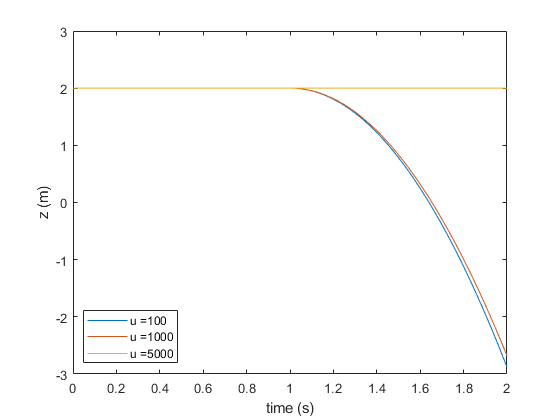  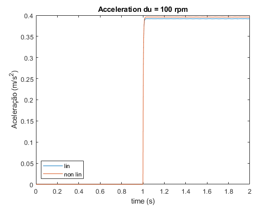 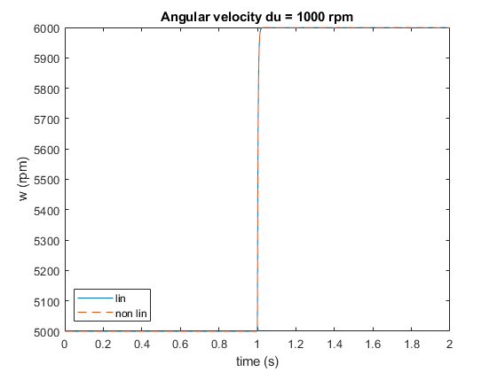 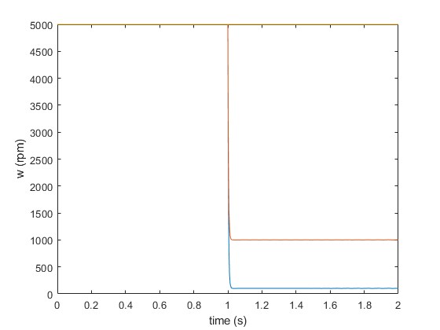 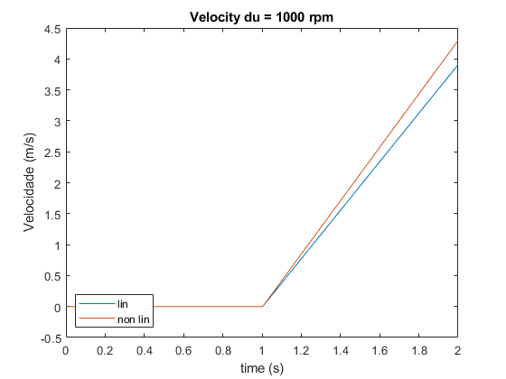 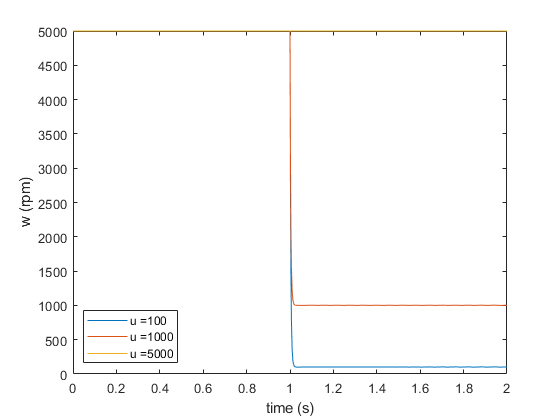 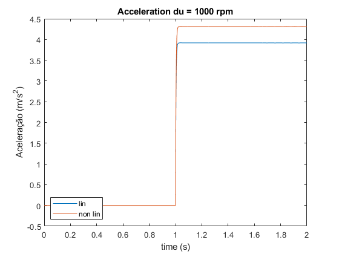 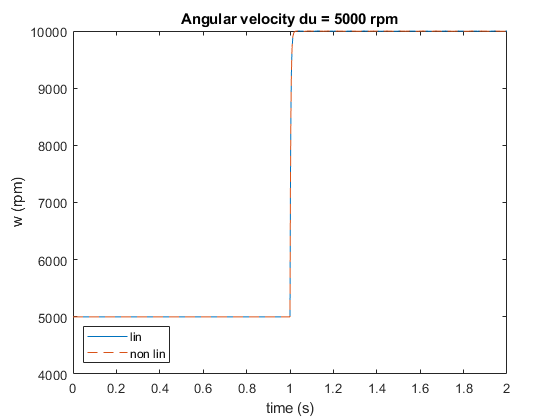 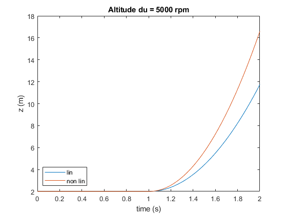 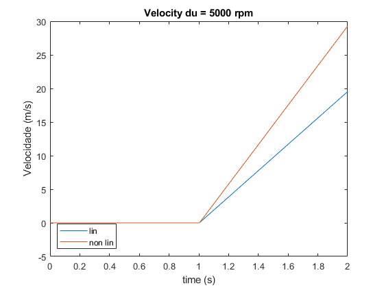 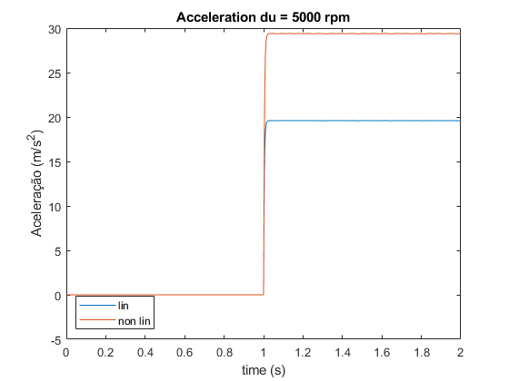
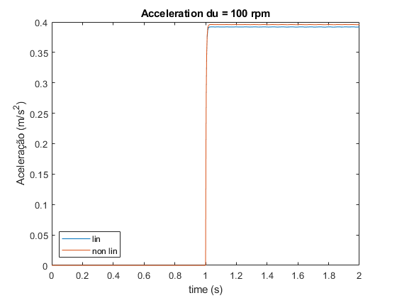 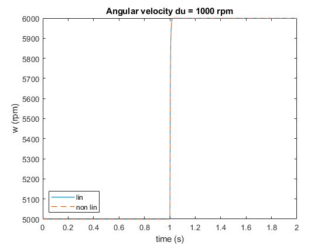 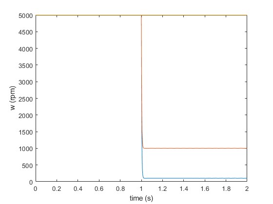 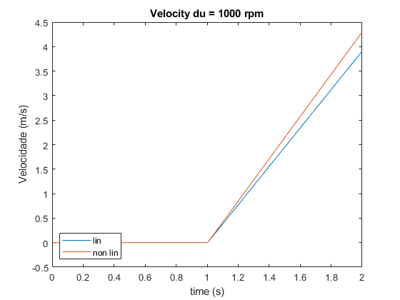 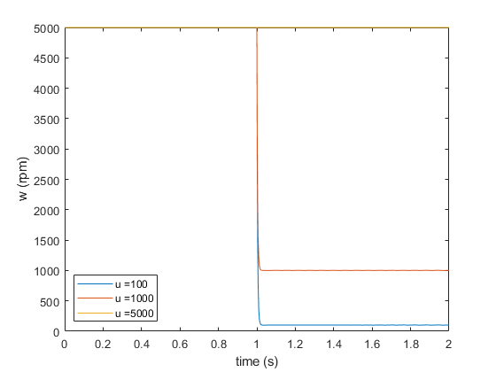 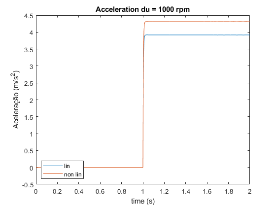 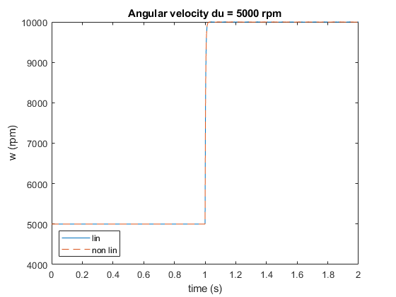 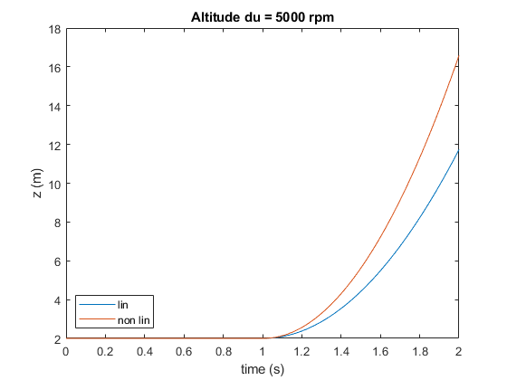 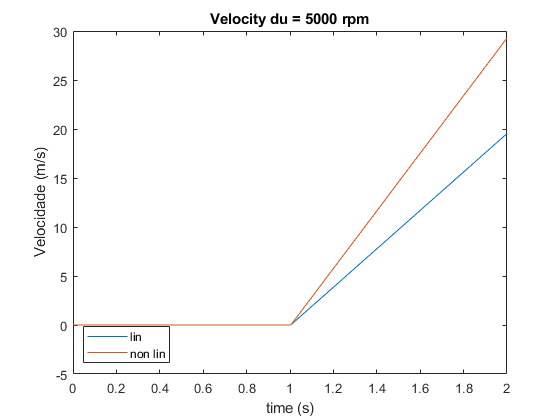 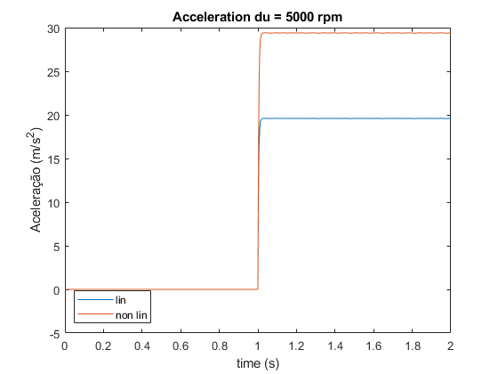 end